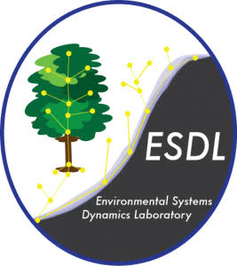
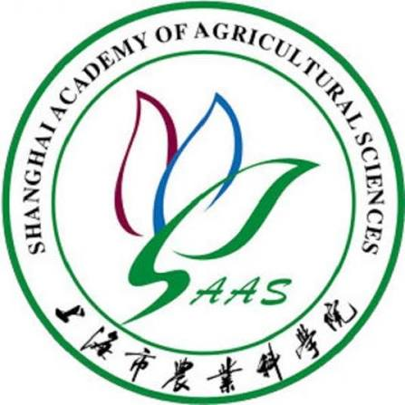

💼 Experience
Aug. 2026 – Present
Undergraduate Researcher
Masters & Undergraduate Research Experience in Statistics (MURES), UIUC
Details
- Developing a pixel-level spatial classification of the Brazilian–Colombian Amazon that jointly captures natural-resource land systems and the presence of non-state armed actors, using raster and municipal-level data harmonized onto a uniform grid.
- Applying an archetype-analysis framework (data harmonization, pre-treatment, and clustering) to indicators on illicit economies, land use, accessibility, and organized violence, and testing how sensitive the results are to grid scale.
Jun. 2024 – Present
Research Assistant
Virginia Tech Carilion School of Medicine
Details
Spatial Accessibility to Diabetes Care in Virginia
- Developed a spatial accessibility framework for diabetes care in Virginia using census-tract demand, clinic supply, provider FTEs, and OSRM-based driving times.
- Implemented a refined two-step floating catchment area (2SFCA) model with distance-decay functions to measure geographic disparities in access to diabetes care.
Spatial Accessibility to Mental Health Services in the United States
- Analyzed geographic accessibility to mental health services across the United States using multi-scale travel-time catchments, Census demographics, and facility data.
- Applied OLS, spatial autocorrelation diagnostics, and MGWR to examine geographic disparities and the socioeconomic factors associated with access to care.

Sep. 2024 – May 2025
Undergraduate Research Apprentice (URAP)
ESDL Lab, UC Berkeley
Details
- Mapped vegetation and land-cover patterns in Botswana's Okavango Delta using satellite imagery, expert interpretation, and geospatial analysis in QGIS and Google Earth Engine.
- Supported land-cover classification and ecosystem analysis using Random Forest, DSWE, NDVI, canopy, entropy, and multi-temporal remote-sensing datasets.
May 2026 – Present
GIS and CS Engineer Co-op
FedEx Corp.
Details
- Developed Python-based geospatial workflows for GPS trajectory analysis, geofence validation, and route comparison using pandas, ArcPy, and enterprise spatial datasets.
- Built an exploratory data analysis (EDA) package on GCP and BigQuery, and applied LLM-assisted analysis and visualization workflows to support transportation, location intelligence, and operational decision-making.
Apr. 2026 – present
Database Intern (Remote)
World Resources Institute (WRI)
Details
- Built Python-based ETL workflows to collect, clean, standardize, and maintain multi-source urban, energy, and policy datasets.
- Used SQL, geospatial databases, and LLM-assisted workflows to support reproducible data pipelines and frontend data services for urban research applications.
Sep. 2025 – May. 2026
Student Hourly Worker
Map Library, University of Illinois Urbana-Champaign
Details
- Supported map, atlas, and geospatial resource collections through circulation, catalog searching, shelving, labeling, and collection organization.
- Assisted students and researchers in locating cartographic and geographic materials while maintaining specialized map-library collections.
May. 2025 – Aug. 2025
GIS Summer Intern
CityDNA
Details
- Developed interactive 2D and 3D geospatial visualization tools for low-altitude airspace using Vue, Mapbox GL, Cesium, Turf.js, and ECharts.
- Built Python geoprocessing workflows for airspace boundaries, flight routes, terrain analysis, wind fields, visibility analysis, and UAV spatial applications.

May. 2024 – Aug. 2024
Remote Sensing Intern
Shanghai Agricultural Academy
Details
- Processed and analyzed satellite imagery and geospatial datasets to support agricultural remote-sensing and land-monitoring applications.
- Applied GIS and remote-sensing workflows to extract, visualize, and interpret spatial patterns in agricultural landscapes.